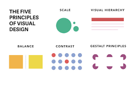
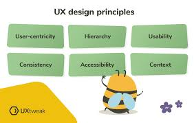

Jobs in Web and UX
UX Designer
UX Designers are responsible for creating intuitive and visually appealing digital experiences across various platforms, ensuring users have seamless interactions with products and services. This individual collaborates closely with cross-functional teams to understand user needs, conduct research, and design solutions that enhance the overall user experience.
Requirements
- Knowledge of Information Architecture
- Experience with User Experience Design
- EXperience with Wireframing

Data and Innovation User Experience Design
As an Innovation & Design Specialist, you will play a crucial role in supporting the company and its partner agencies in the research, development, and implementation of innovative solutions with a strong emphasis on UX/UI principles.
Requirements
- A strong interest in government operations, process improvement, and user-centered design.
- Basic knowledge of UX/UI principles and design tools.
- Excellent research, analytical, and problem-solving skills.
- Ability to work effectively in a team and communicate clearly with both technical and non-technical stakeholders.

Digital User Experience Analyst
Collaborates, develops and builds support and tools (technical and policy) for implementing a common user experience. Develops user experience services, based upon private sector best practices and tests the success of established agency-wide standards.
- Must be a U.S. Citizen or National and provide proof of U.S. Citizenship. (Birth certificate showing birth in the U.S; Unexpired U.S. Passport; Certificate of Citizenship or Naturalization; or Report of Birth Abroad of a U.S. Citizen (Form FS-240))
- One year of experience refers to full-time work; part-timework is considered on a prorated basis.